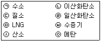
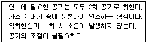
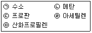

가스산업기사 (2009-05-10 기출문제)
1과목: 연소공학
1. 공기와 혼합하였을 때 폭발성 혼합가스를 형성할 수 있는 것은?(오류 신고가 접수된 문제입니다. 반드시 정답과 해설을 확인하시기 바랍니다.)
- NH2
- N2
- CO2
- SO2
(정답률: 72%)

2. 질소와 산소를 같은 질량으로 혼합하였을 때 평균 분자량은 약 얼마인가? (단, 질소와 산소의 분자량은 각각 28, 32이다.)
- 28.25
- 28.97
- 29.87
- 30.45
(정답률: 67%)
3. 물 250L를 30℃에서 60℃로 상승시킬 때 프로판 0.9kg이 소비되었다면 열효율은 약 몇 %인가? (단, 물의 비열은 1kcal/kg·℃, 프로판의 발열량은 12000kcal/kg이다.)
- 58.4
- 69.4
- 78.4
- 83.3
(정답률: 60%)
4. 연소의 3요소에 해당되지 않는 것은?
- 산소공급원
- 점화원
- 가연성 물질
- 불활성 기체
(정답률: 92%)
5. 시안화수소는 장기간 저장하지 못하도록 규정되어 있다. 가장 큰 이유는?
- 분해폭발하기 때문에
- 산화폭발하기 때문에
- 분진폭발하기 때문에
- 중합폭발하기 때문에
(정답률: 90%)
6. 다음 중 가연성 가스만으로 나열된 것은?

- ㉠, ㉢, ㉣, ㉦
- ㉠, ㉣, ㉤, ㉧
- ㉠, ㉣, ㉥, ㉧
- ㉢, ㉣, ㉤, ㉧
(정답률: 86%)
7. 다음에서 설명하는 연소방식은?

- 적화식
- 분젠식
- 전1차 공기식
- 전2차 공기식
(정답률: 54%)
8. 연소에 대한 설명으로 틀린 것은?
- 가연성 물질의 환원과정이다.
- 자발적으로 반응이 계속된다.
- 발열반응에 의해 열을 발생한다.
- 연소범위는 온도나 압력에 따라 달라진다.
(정답률: 71%)
9. 다음 각 물질의 일반적인 연소형태로서 틀린 것은?
- 경유－예혼합연소
- 에테르－증발연소
- 아세틸렌－확산연소
- 양초－증발연소
(정답률: 68%)
10. 공기 중에서 착화온도가 가장 높은 기체는?
- 수소
- 아세틸렌
- 프로판
- 메탄
(정답률: 59%)
11. 불활성화 방법 중 용기에 액체를 채운 다음 용기로부터 액체를 배출시키는 동시에 증기층으로 불활성 가스를 주입하여 원하는 산소농도를 구하는 퍼지방법은?
- 사이펀퍼지
- 스위프퍼지
- 압력퍼지
- 진공퍼지
(정답률: 72%)
12. 위험성을 나타내는 성질에 대한 설명으로 틀린 것은?
- 비등점이 낮으면 인화의 위험성이 높아진다.
- 유지, 파라핀 등 가연성 고체는 화재 시가연성 액체로 되어 화재를 확대한다.
- 물과 혼합되기 쉬운 가연성 액체는 물과의 혼합에 의해 증기압이 높아져 인화점이 낮아진다.
- 전기전도도가 낮은 인화성 액체는 유동이나 여과 시 정전기를 발생하기 쉽다.
(정답률: 67%)
13. CO2max(%)는 다음 중 어느 때의 값을 말하는가?
- 실제공기량으로 연소시켰을 때
- 이론공기량으로 연소시켰을 때
- 과잉공기량으로 연소시켰을 때
- 부족공기량으로 연소시켰을 때
(정답률: 87%)
14. 다음 기체연료 중 CH4 및 H2를 주성분으로 하는 가스는?
- 고로가스
- 발생로가스
- 수성 가스
- 석탄가스
(정답률: 71%)
15. 기체연료 중 공기와 혼합기체를 만들었을 때 연소속도가 가장 빠른 것은?
- 수소
- 메탄
- 프로판
- 톨루엔
(정답률: 84%)
16. 다음 중 시안화수소의 위험도(H)는 약 얼마인가?
- 5.8
- 8.8
- 11.8
- 14.8
(정답률: 70%)
17. 가연성 가스와 공기의 혼합기체 폭발범위 상한 값과 하한 값의 차이가 작은 것부터 큰 순서대로 옳게 나열된 것은?

- ㉢, ㉡, ㉤, ㉠, ㉣
- ㉢, ㉤, ㉡, ㉠, ㉣
- ㉤, ㉡, ㉢, ㉣, ㉠
- ㉡, ㉢, ㉤, ㉣, ㉠
(정답률: 63%)
18. 다음 중 불꽃점화기관에서 발생하는 노킹(Knocking) 현상을 방지하는 방법이 아닌 것은?
- 달딘가스의 온도를 내린다.
- 혼합기액 자기착화온도를 낮춘다.
- 불꽃진행거리를 짧게 한다.
- 화염속도를 크게 한다.
(정답률: 36%)
19. 파라핀계 탄화수소에서 탄소의 수가 증가함에 따른 변화에 대한 설명으로 틀린 것은?
- 발열량(kcal/m3)은 커진다.
- 발화온도는 낮춘다.
- 연소속도를 느려진다.
- 폭발하한계는 높아진다.
(정답률: 60%)
20. 산소가 20℃, 5m3의 탱크 속에 들어있다. 이 탱크의 압력이 10kgf/cm2이라면 산소의 질량은 약 몇 kg인가? (단, 기체상수 R은 848kg·m/kmol·K이다.)
- 0.644
- 1.55
- 55.3
- 64.5
(정답률: 44%)
2과목: 가스설비
21. 메탄가스에 대한 설명으로 옳은 것은?
- 공기 중에 30%의 메탄가스가 혼합된 경우 점화하면 폭발한다.
- 담청색의 기체로서 무색의 화염을 낸다.
- 고온에서 수증기와 작용하면 일산화탄소와 수소를 생성한다.
- 올레핀계 탄화수소로서 가장 간단한 형의 화합물이다.
(정답률: 79%)
22. 케이싱 내에 모인 임펠러가 회전하면서 기체가 원심력작용에 의해 임펠러의 중심부 에서 흡입되어 외부로 토출하는 구조의 압축기는?
- 회전식 압축기
- 축류식 압축기
- 왕복식 압축기
- 원심식 압축기
(정답률: 72%)
23. 정압기에서 유량 특성은 메인밸브의 열림과 유량과의 관계를 말하는데 유량 특성의 종류가 아닌 것은?
- 평방근형
- 직선형
- 수직형
- 2차형
(정답률: 58%)
24. 시간당 66400kcal를 흡수하는 냉동기의 용량은 몇 냉동톤인가?
- 20
- 24
- 28
- 32
(정답률: 71%)
25. 초저온 용기나 저온 용기용 단열재가 갖추어야 할 성질이 아닌 것은?
- 밀도가 커야 한다.
- 흡습성이 작아야 한다.
- 열전도율이 작아야 한다.
- 화학적으로 안정하여야 한다.
(정답률: 61%)
26. 표준상태의 조직을 가지는 탄소강에서 탄소의 함유량이 증가함에 따라 감소하는 성질은?
- 인장강도
- 충격값
- 강도
- 항복점
(정답률: 47%)
27. 금속재료에 대한 설명으로 옳지 않은 것은?
- 강에 인(P)의 함유량이 많아지면 연신 율, 충격치는 저하된다.
- 크롬 18%, 니켈 8% 함유한 강을 18-8 스테인리스강이라 한다.
- 구리와 주석의 합금은 황동이고 구리와 아연의 합금은 청동이다.
- 금속가공 중에 생긴 잔류응력을 제거하기 위하여 열처리를 한다.
(정답률: 62%)
28. 아세틸렌을 용기에 충전할 때에는 미리 용기에 다공물질을 고루 채워야 한다. 이때 다공도의 범위로 옳은 것은?
- 65% 이상 92% 미만
- 75% 이상 92% 미만
- 70% 이상 95% 미만
- 85% 이상 95% 미만
(정답률: 83%)
29. 다음 LP가스 공급방식 중 강제기화방식이 아닌 것은?
- 생가스 공급방식
- 변성가스 공급방식
- 공기혼합가스 공급방식
- 직접혼입가스 공급방식
(정답률: 39%)
30. 린데식 액화장치의 구조상 반드시 필요하지 않은 것은?
- 열교환기
- 팽창기
- 팽창밸브
- 액화기
(정답률: 50%)
31. 입상배관에 의한 입력손실(H) 계산식으로 옳은 것은? (단, H는 mmH2O, S는 가스의 비중, h는 높이치(m)이다.)
- H=1.293(S-1)h
- H=12.93(S-1)h
- H=12.93(h-1)S
- H=129.3(h-1)S
(정답률: 68%)
32. 초저온 액화가스 저장조(CE ; Cold Evaporator)에 대한 설명으로 틀린 것은?
- 단각식과 이중각식으로 구분된다.
- 자기가압장치 및 기화설비를 이용한다.
- 단열성능시험에 합격하여야 한다.
- 2중 저장조의 구조로서 내·외조 사이에 단열재가 충전되어 있다.
(정답률: 49%)
33. 압축기의 내부 윤활유 사용에 대한 설명으로 틀린 것은?
- LPG 압축기에는 식물성 기름을 사용 한다.
- 염소가스 압축기에는 진한 황산을 사용 한다.
- 산소압축기에는 묽은 글리세린수를 사용한다.
- 공기압축기에는 물이나 식물성 기름을 사용한다.
(정답률: 58%)
34. 오토클레이브(Auto clave)의 종류 중 교반 효율이 떨어지기 때문에 용기벽에 장애핀을 설치하거나 용기 내에 다수의 불을 넣어 내용물의 혼합을 촉진시켜 교반효과를 올리는 형식은?
- 교반형
- 정치형
- 진탕형
- 회전형
(정답률: 56%)
35. 다음 중 공기보다 비중이 가벼운 도시가스의 공급시설로서 공급시설이 지하에 설치된 경우의 통풍구조에 대한 설명으로 옳은 것은?
- 배기구는 천장면으로부터 50cm 이내에 설치한다.
- 흡입구 및 배기구의 관경은 50mm 이상으로 하되, 통풍이 양호하도록 한다.
- 통풍구는 환기구를 2방향 이상 분산하여 설치한다.
- 배기가스 방출구는 지면에서 5m 이상의 높이에 설치하되 화기가 없는 안전한 장소에 설치한다.
(정답률: 44%)
36. 내압시험압력 및 기밀시험압력의 기준이 되는 압력으로서 사용 상태에서 해당 설비 등의 각 부에 작용하는 최고사용압력을 의미하는 것은?
- 설계압력
- 표준압력
- 상용압력
- 설정압력
(정답률: 77%)
37. LPG 이송 펌프에서 발생할 수 있는 베이퍼록(vapor-lock) 현상을 방지하기 위한 조치로 옳은 것은?
- 흡입배관을 가열한다.
- 펌프의 설치위치를 높인다.
- 흡입배관의 관경을 크게 한다.
- 펌프의 회전속도를 빠르게 한다.
(정답률: 67%)
38. 실린더의 지름이 10cm, 행정거리가 20cm, 회전수가 1000rpm인 왕복압축기의 토출량은 약 몇 m3/h인가? (단, 압축기의 체적효율은 70%이다.)
- 46
- 56
- 66
- 76
(정답률: 55%)
39. 접촉분해식 프로세스에서 일정 온도와 압력에서 수증기 비를 증가시킬 때 일어나는 현상은?
- CO의 생성이 증가한다.
- H2의 생성이 증가한다.
- CH4의 생성이 증가한다.
- CO2의 생성이 감소한다.
(정답률: 54%)
40. 진양정이 54m, 유량이 1.2m3/min인 펌프로 물을 이송하는 경우 이 펌프의 축동력은약 몇 PS인가? (단, 펌프의 효율은 80%, 물의 밀도는 1g/cm2이다.)
- 13
- 18
- 23
- 28
(정답률: 61%)
3과목: 가스안전관리
41. 이음매 없는 용기 제조 시 탄소함유량은 몇 % 이하를 사용하여야 하는가?
- 0.04
- 0.⑤
- 0.33
- 0.55
(정답률: 51%)
42. 일정 기준 이상의 고압가스를 적재 운반 시는 운반책임자가 동승해야 하는데 운반책임자의 동승기준으로 틀린 것은?
- 가연성 압축가스 : 300m3이상
- 조연성 압축가스 : 600m3이상
- 독성 액화가스 : 1000kg 이상
- 가연성 액화가스 : 4000kg 이상
(정답률: 69%)
43. 차량에 고정된 탱크를 운행할 경우 안전운행 서류철을 휴대하여야 한다. 휴대하여야 할 사항이 아닌 것은?
- 고압가스 이동계획서
- 고압가스 관련자격증
- 용량환산표
- 가스안전 영향평가서
(정답률: 51%)
44. 고압가스 특정제조시설의 기술기준으로 가스의 제조시설에는 제조를 제어하기 위해 계기실을 갖추어야 한다. 계기실의 문을 2중으로 설치하지 아니하여도 되는 가스는?
- 아세트알데히드
- 산소
- 프로판
- 부탄
(정답률: 67%)
45. 내용적 40L의 CO2 용기에 CO2 가스를 충전하였다. 이 용기에 충전된 CO2 가스의 중량(kg)은? (단, 액화 CO2의 가스정수는 1.47이다.)
- 27.2
- 29.9
- 58.8
- 64.7
(정답률: 53%)
46. 가연성 가스 및 독성 가스의 충전용기 보관실의 주위 몇 m 이내에서는 화기를 사용하거나 인화성 물질 또는 발화성 물질을 두지 않아야 하는가?
- 1
- 2
- 3
- 5
(정답률: 78%)
47. 전가스 소비량이 232.6kW 이하인 온수보일러의 성능기준에서 전가스 소비량은 표시치의 얼마 이내이어야 하는가?
- ±1%
- ±3%
- ±5%
- ±10%
(정답률: 66%)
48. 용기의 종류별 부속품의 기호로서 틀린 것은 어느 것인가?
- 아세틸렌 : AG
- 압축가스 : PG
- 액화가스 : LP
- 초저온 및 저온 : LT
(정답률: 74%)
49. 메탄 80vol%와 아세틸렌 20vol%로 혼합된 혼합가스의 공기 중 폭발하한계는 약 몇 %인가?
- 3.4%
- 4.2%
- 5.4%
- 6.3%
(정답률: 69%)
50. 포스겐가스(COCl2)를 취급할 때의 주의사항으로 옳지 않은 것은?
- 취급 시 반드시 방독마스크를 착용할 것
- 공기보다 가벼우므로 보관장소의 환기 시설은 위쪽에 설치할 것
- 시동 후 폐가스를 방출할 때에는 중화 시킨 후 옥외로 방출시킬 것
- 취급 장소는 환기가 잘 되는 곳일 것
(정답률: 63%)
51. 전기방식 전류가 흐르는 상태에서 토양 중에 매설되어 있는 도시가스 배관의 방식전위는 포화황산동 기준전극으로 몇 V 이하 이어야 하는가?
- -0.75
- -0.85
- -1.2
- 1.5
(정답률: 80%)
52. 도시가스사업법상 배관 구분 시 사용되지 않는 용어는?
- 본관
- 사용자 공급관
- 가정관
- 공급관
(정답률: 70%)
53. 고압가스 특정제조시설에 설치되는 가스누출 검지경보장치의 설치기준에 대한 설명으로 옳은 것은?
- 경보농도는 가연성 가스의 경우 폭발하한계의 1/2 이하로 하여야 한다.
- 검지에서 발신까지 걸리는 시간은 경보농도의 1.2배 농도에서 보통 20초 이내로 한다.
- 경보기의 정밀도는 경보농도 설정치에 대하여 가연성 가스용은 ±25% 이하 이어야 한다.
- 검지경보장치의 경보정밀도는 전원의 전압 등 변동이 ±20% 정도일 때에도 저하되지 아니하여야 한다.
(정답률: 69%)
54. 자기압력 기록계로 최고사용압력이 중압인 도시가스 배관에 기밀시험을 하고자 한다. 배관의 용적이 15m3일 때 기밀유지시간은 몇 분 이상이어야 하는가?
- 24분
- 36분
- 240분
- 360분
(정답률: 76%)
55. 액화염소 2000kg을 차량에 적재하여 운반할 때 휴대하여야 할 소석회는 몇 kg 이상을 기준으로 하는가?
- 10
- 20
- 30
- 40
(정답률: 54%)
56. 에어졸 충전시설에는 온수시험 탱크를 갖추어야 한다. 충전용기의 가스누출시험온도는?
- 26℃ 이상 30℃ 미만
- 30℃ 이상 50℃ 미만
- 46℃ 이상 50℃ 미만
- 50℃ 이상 66℃ 미만
(정답률: 74%)
57. 충전용기를 적재한 차량을 운행 중 주차할 필요가 있을 경우에 제1종 보호시설로부터의 최소이격주차거리는?
- 10m
- 15m
- 20m
- 30m
(정답률: 58%)
58. 용기 내부에서 가연성 가스의 폭발이 발생할 경우 그 용기가 폭발압력에 견디고 집합 면, 개구부 등을 통하여 외부의 가연성 가스에 인화되지 아니하도록 한 구조는 어느 것인가?
- 내압방폭구조
- 유입방폭구조
- 압력방폭구조
- 특수방폭구조
(정답률: 80%)
59. 용기에 충전하는 시안화수소의 순도 기준으로 옳은 것은?
- 97.5% 이상
- 98.0% 이상
- 98.5% 이상
- 99.0% 이상
(정답률: 77%)
60. 액화염소 142g을 기화시키면 표준상태에서 몇 L의 기체염소가 되는가? (단, 염소의 원자량은 35.5이다.)
- 22.4
- 44.8
- 67.2
- 89.6
(정답률: 59%)
4과목: 가스계측
61. 가스크로마토그래피의 특징에 대한 설명으로 옳은 것은?
- 다성분의 분석은 1대의 장치로는 할 수 없다.
- 적외선 가스분석계에 비해 응답속도가 느리다.
- 캐리어가스는 수소, 염소, 산소 등이 이용된다.
- 분리 능력은 극히 좋으나 선택성이 우수하지 않다.
(정답률: 62%)
62. 전압과 정압의 압력차를 이용하여 위치에 따른 국부 유속을 측정하는 유량계는?
- 피토관
- 오리피스
- 벤투리
- 플로노즐
(정답률: 52%)
63. 초음파 유량계에 더한 설명으로 옳지 않은 것은?
- 정확도가 아주 높은 편이다.
- 개방수로에는 적용되지 않는다.
- 측정제가 유체와 접촉하지 않는다.
- 고온·고압 부식성 유제에도 사용이 가능하다.
(정답률: 64%)
64. 최대유량이 10m3/h 이하인 가스미터에 대한 검정유효기간은 몇 년인가?
- 1
- 3
- 5
- 8
(정답률: 72%)
65. 습공기의 절대습도와 그 온도와 동일한 포화공기의 절대습도와의 비를 의미하는 것은?
- 비교습도
- 포화습도
- 상대습도
- 절대습도
(정답률: 67%)
66. 산포(흩어짐) 작음 정도를 나타내는 것은?
- 정밀성
- 정확성
- 정도
- 불확실성
(정답률: 73%)
67. 오리피스 유량계의 측정원리로 옳은 것은?
- 하젠－포아젠의 원리
- 패닝의 법칙
- 아르키메데스의 원리
- 베르누이의 원리
(정답률: 81%)
68. HCN 가스의 검지반응에 사용하는 시험지의 반응색이 옳게 짝지어진 것은?
- KI 전분지－청색
- 초산벤젠지－청색
- 염화파라듐지－적색
- 염화제일구리 착염지－적색
(정답률: 71%)
69. 가스계량기의 설치장소로 부적당한 곳은?
- 전기계량기와는 15cm 떨어진 위치
- 입상관과 화기와는 2m 이상의 우회거리를 유지한 곳
- 직사광선 또는 빗물을 받을 우려가 없는 곳
- 설치높이는 바닥으로부터 1.6m 이상 2m 이내
(정답률: 73%)
70. 적외선분광분석계로 분석이 불가능한 것은?
- CH4
- Cl2
- COCl2
- NH2
(정답률: 67%)
71. 어떤 잠수부가 바다에서 15m 아래 지점에서 작업을 하고 있다. 이 잠수부가 바닷물에 의해 받는 압력은 약 몇 kPa인가? (단, 해수의 비중은 1.025이다.)
- 46
- 102
- 151
- 252
(정답률: 54%)
72. 기어의 회전이 유량에 비례하는 것을 이용한 유량계로서 회전체의 회전속도를 측정 하여 유량을 알 수 있는 용적식 유량계는?
- 오리피스형 유량계
- 터빈형 임펠러식 유량계
- 오벌식 유량계
- 벤투리식 유량계
(정답률: 32%)
73. 다음 중 기체의 열전도율을 이용한 진공계가 아닌 것은?
- 피라니 진공계
- 열전쌍 진공계
- 서미스터 진공계
- 매클라우드 진공계
(정답률: 66%)
74. U자관 압력계로 탱크 내의 기체압력을 측정하였더니 차가 146mmHg이었다. 대기압이 760mmHg일 때 이 기체의 절대압력은 몇 mmHg인가?
- 89
- 354
- 614
- 906
(정답률: 47%)
75. 다음 중 유체에너지를 이용하는 유량계는?
- 터빈유량계
- 전자기유량계
- 초음파유량계
- 열유량계
(정답률: 77%)
76. LPG의 성분분석에 이용되는 분석법 중 저온분류법에 의해 적용될 수 있는 것은?
- 관능기의 검출
- cis, trans의 검출
- 방향족 이성체의 분리정량
- 지방족 탄화수소의 분리정량
(정답률: 70%)
77. 제어에서 입력이라고도 하며, 제어계의 외부로부터 주어지는 값을 무엇이라 하는가?
- 기준출력
- 목표치
- 제어량
- 조작량
(정답률: 51%)
78. 여과기(strainer)의 설치가 필요한 가스미터는?
- 터빈 가스미터
- 루트 가스미터
- 막식 가스미터
- 습식 가스미터
(정답률: 71%)
79. 자동제어는 목표치의 변화에 따라 구분된다. 다음 중 목표치가 일정한 제어방식은?
- 정치제어
- 비율제어
- 추종제어
- 프로그램 제어
(정답률: 46%)
80. 가스의 굴절률 차이를 이용하여 가연성 가스의 농도를 측정하는 방법은?
- 안전등형
- 열전도식
- 간섭계형
- 연소식
(정답률: 67%)